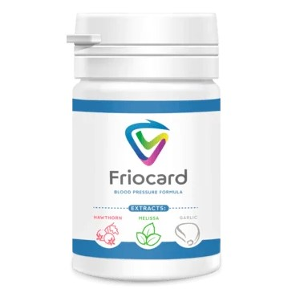

Der Winter ist in Deutschland die gefährlichste Jahreszeit für Menschen, die an Bluthochdruck leiden! 89 % der Herzinfarkte und Schlaganfälle treten im Winter auf
Die Ergebnisse einer Stichprobenstudie zeigen, dass nur 48 % der Deutschen von ihrem arteriellen Bluthochdruck wissen, nur 34 % dagegen behandelt werden und nur 11 % die Behandlung für wirksam halten. Und viele berichten von einem Anstieg der Krankheit in der Nebensaison, wenn der Herbst in den Winter übergeht.Das ist verständlich. Der Winter mit seinen Schwankungen des Luftdrucks, großen Unterschieden zwischen Tag- und Nachttemperaturen, Wind und Frost steht vor der Tür. Es ist kein Zufall, dass Herz-Kreislauf-Unfälle - Herzinfarkte und Schlaganfälle - am häufigsten in der Nebensaison auftreten. In dieser Zeit kommt es auch zu plötzlichen Veränderungen in den Blutgefäßen des menschlichen Herzens und Gehirns. Wenn wir über die Auswirkungen des Wetters sprechen, geht es nicht nur um die Lufttemperatur. Dabei spielen eine ganze Reihe von Faktoren eine Rolle: Temperatur, Feuchtigkeit, Luftdruck, Windgeschwindigkeit usw. Abrupte Veränderungen dieser Parameter haben spürbare Auswirkungen auf den gesamten Körper, insbesondere auf den Zustand der Blutgefäße. Ein plötzlicher Kälteeinbruch ist an sich schon ein natürlicher Faktor, der die Wahrscheinlichkeit von Gefäßspasmen erhöht, so dass der Blutdruck ansteigen und Kopfschmerzen oder Schwindel angesichts niedriger Temperaturen auftreten können.So erhöht sich bei Frost, insbesondere bei starkem Wind, das Risiko von Herzinfarkten, Schlaganfällen und plötzlichen Todesfällen. Besonders gefährlich ist es, wenn man aus einem gut gewärmten Raum in die Kälte geht.
Wie Wetterfaktoren die menschliche Gesundheit beeinflussen
Erhöhte Luftfeuchtigkeit. Reduziert den Sauerstoffgehalt in der Luft, was bei gesunden Menschen zu erhöhter Müdigkeit und Schläfrigkeit führt. Verschlechtert die Gesundheit von Asthmatikern, Menschen mit Herzproblemen und Menschen mit Gelenkerkrankungen.
Starker Wind. Provoziert Darmkrämpfe, Magenschmerzen und Schlaflosigkeit.
Frost. Kurzatmigkeit bei Asthmatikern. Menschen mit Bluthochdruck bekommen Bluthochdruck und Herzbeschwerden.
Verringerung des atmosphärischen Drucks. Kurzatmigkeit, Schwäche und Kurzatmigkeit betreffen Asthmatiker und Herzpatienten. Ein starker Blutdruckabfall bei Hypotonikern.
Ein Anstieg des atmosphärischen Drucks. Bluthochdruckpatienten reagieren mit Schmerzen und erhöhtem Risiko für Herzinfarkt und Schlaganfall
Magnetischer Sturm. Alle wetterfühligen Menschen leiden darunter. Blutdruckanstieg, Kopfschmerzen, Herzrhythmusstörungen, Reizbarkeit und Angstzustände.
Fragen des Arztes: Wie können Bluthochdruckpatienten die negativen Auswirkungen des Wetters loswerden?
Dr. med. Mark Dubiel
Oberarzt, Klinik für Innere Medizin/Kardiologie, Unfallkrankenhaus Berlin, Lehrkrankenhaus der Charité (Direktor: Prof. F.X. Kleber), Berlin Diagnostik und konservative Therapie von strukturellen Herzerkrankungen (Koronare Herzkrankheit, Herzklappenfehler, Kardiomyopathien, Herzrhythmusstörungen / Vorhofflimmern, Bluthochdruck) und Gefäßerkrankungen (Arterien- und Venenerkrankungen)
- Welche Maßnahmen sollten ergriffen werden, um sicherzustellen, dass Wetterschwankungen nicht zu einer Verschlechterung des Wohlbefindens führen?
- Zunächst einmal werden Menschen nicht als Meteoropathen geboren, sondern werden unter dem Einfluss von Umweltfaktoren und ihrer eigenen Lebensweise zu Meteoropathen. Auch das Alter spielt eine Rolle. Um nicht von den Launen des Wetters abhängig zu sein, bedarf es eines vernünftigen Tagesablaufs, ausreichender körperlicher Aktivität und einer angemessenen Ernährung.
- Sollten Sie Ihre Zeit im Freien einschränken, wenn Sie ein Herzleiden haben?
- Wenn es möglich ist, sollten Sie bei strengem Frost besser im Haus bleiben. Das heißt aber nicht, dass man nicht nach draußen gehen sollte. Wenn das Wetter es zulässt, ist ein halbstündiger Spaziergang ein Muss, vor allem vor dem Schlafengehen.
- Was ist die beste Kleidung, um bei kaltem Wetter warm zu bleiben?
- Alle Ärzte empfehlen, mehrere Schichten zu tragen: Lieber ein paar dünne Pullover als einen dicken Pullover. Sie sollten Kleidung aus natürlichen Materialien bevorzugen. In jedem Fall sollte Kleidung, die mit dem Körper in Berührung kommt, nicht synthetisch sein.
- Warum?
- Synthetik ist nicht atmungsaktiv, erzeugt eine hohe Luftfeuchtigkeit, kühlt schnell aus und gibt diese Kälte an den Körper weiter.
- Was sollte ein Mensch mit Bluthochdruck tun, wenn er das Haus verlassen muss und die Außentemperatur sehr niedrig ist?
- Als Erstes sollte man den Rat des Arztes befolgen. In der Regel müssen diese Menschen die verschriebenen Medikamente immer einnehmen. Sie sollten auch Medikamente mit sich führen, die die Herzkranzgefäße schnell erweitern, falls Sie einen Angina pectoris-Anfall bekommen.
- Hinweise auf ein wirksames Mittel, das Bluthochdruckpatienten helfen kann, ihren Blutdruck bei schlechtem Wetter zu normalisieren
- Ich empfehle Friocard, ein Mittel der neuen Generation, um das Herz-Kreislauf-System wiederherzustellen und den Blutdruck auf ein altersgerechtes Niveau zu senken, ohne die Erweiterung der Blutgefäße zu erzwingen. Es ist völlig sicher, hat keine Nebenwirkungen und kann ohne ärztliche Aufsicht eingenommen werden.

Es ist ein einzigartiges Mittel, das für die Einnahme im Winter entwickelt wurde, wenn das Herz-Kreislauf-System stark belastet ist. Friocard normalisiert den Herz- und Atemrhythmus, erweitert die Blutgefäße und beruhigt das Nervensystem. Senkt sanft und unschädlich Ihren Blutdruck und hält ihn im normalen Bereich
- Wie wirkt die Friocard auf den Körper?
Die Friocard arbeitet in drei Stufen:
1. Löst Ablagerungen in den Blutgefäßen auf
Löst atherosklerotische Plaques, Blutgerinnsel und Kalziumkalk auf. Vergrößert das Lumen der Gefäße auf
bis zu 99,71 % des Normalwerts und stellt die Blutzirkulation wieder her.
2. Beseitigt die Auswirkungen einer schlechten Durchblutung
Beseitigt oder lindert deutlich Beschwerden wie Bluthochdruck, Kopfschmerzen, Krampfadern, Thrombose.
Tinnitus, Schwindel, Schwellungen, Sehschärfe und geistige Klarheit verschwinden. Gewicht und
Fettstoffwechsel werden normalisiert.
2. Beseitigt die Auswirkungen einer schlechten Durchblutung
Es verhindert die Bildung neuer Plaques und reduziert das Schlaganfallrisiko um den Faktor 11.
- Wo kann ich die Friocard kaufen?
- Für den Vertrieb der Friocard haben wir eine spezielle Abteilung eingerichtet, die sich mit den Anwendungen beschäftigt. Alle, die die Friocard mit Versand erhalten möchten, müssen ihren Namen und ihre Kontaktdaten angeben. Ein Berater wird sich dann mit Ihnen in Verbindung setzen, um einen geeigneten Liefertermin zu vereinbaren. Wir haben versucht, alles so einfach wie möglich zu gestalten, damit jeder Zugang zu dem Produkt hat, auch wenn Sie noch nie etwas online bestellt haben.
Wir vertreiben die Friocard nun seit zwei Monaten. In dieser Zeit haben wir viele Dankesschreiben von Menschen erhalten, die an Bluthochdruck leiden. Dies beweist einmal mehr, dass das Produkt Bluthochdruckpatienten hilft, den Winter gut zu überstehen, ohne das Risiko eines Infarkts oder Schlaganfalls!
Speziell für unsere Leser haben wir ein Bestellformular für das Produkt Friocard
UM EINE FRIOCARD ZU BESTELLEN, GEBEN SIE BITTE UNTEN IHRE DATEN EIN:
Das Sonderangebot ist gültig bis Ende des Tages 09.11.2021
KOMMENTARE:
Niclas Fieck
Vielen Dank für diesen tollen Artikel! Alle Menschen mit Bluthochdruck können lesen und etwas Neues über die Behandlung lernen.
Axel Schieber
Danke an den Arzt für dieses Mittel! Ich habe es ausprobiert, und ich habe mich wirklich besser gefühlt. In einer Woche werden wir sehen, ob es irgendwelche Ergebnisse gibt. Es ist noch zu früh, um das zu sagen, ich werde später darüber berichten. Aber keine Druckspitzen, man spürt sie nicht einmal. Es wird also alles gut werden, denke ich!
Steve Hüller
Ich habe in einer medizinischen Fachzeitschrift über dieses Mittel gelesen. Der Fachartikel stammt von einem berühmten Kardiologen!
Cornelia Trentsch
Ehrlich gesagt, ist es ein großartiges Produkt! Ich habe es sofort bestellt, als ich diesen Artikel gelesen habe. Als ich die Friocard erhalten habe, habe ich sofort angefangen, sie einzunehmen. Ich habe noch am selben Abend eine Verbesserung meiner Gesundheit festgestellt. Mein Blutdruck war jetzt normal. Normal war für mich nicht normal als Hypertoniker, sondern als normaler Mensch mit normalem Blutdruck. Mein Zustand nach der Einnahme ist großartig. Ich fühlte mich stärker und schlief besser.
Henry Leitinger
Mein Blutdruck scheint in Ordnung zu sein, aber meine Mutter hat ständig Schmerzen. Ich werde es für sie bestellen und hoffe, dass es hilft.
Susanna Stenzel
Ich habe die Friocard ausprobiert. Früher bekam ich fast täglich abends Kopfschmerzen, selbst Schmerzmittel halfen nicht. Später fand ich heraus, dass meine Kopfschmerzen durch Druck verursacht wurden. Ich habe diesen Artikel im Internet gesehen und beschlossen, ihn auszuprobieren. Innerhalb eines Monats war ich ein anderer Mensch! Mein Kopf tut mir nicht mehr weh, meine Krampfadern sind weg und das Wichtigste: Ich habe 20 kg abgenommen! Ich habe von 94 kg auf 74 kg abgenommen! Das bedeutet, dass mein Kreislauf wieder in Schwung kommen muss! Ich empfehle die Friocard jetzt auf jeden Fall weiter!
Martin Seidel
Ich habe schon genug von den Blutdruckspitzen. Die Unannehmlichkeiten und Schmerzen machen das Leben unmöglich. Ich weiß nicht mehr, was ich tun soll. Ich nehme von Zeit zu Zeit verschiedene Mittel, aber sie helfen nicht.
Norman Kruschke
Ich selbst hatte aufgrund meines Blutdrucks Probleme, bis hin zu Mikroinfarkten. Dank meiner Frau fand sie die Friocard und bestellte sie. Jetzt habe ich überhaupt keine Blutdruckprobleme mehr.
Marko Bromann
Ich bestätige jedes Wort - die Friocard ist hervorragend, eines der wirtschaftlichsten und wirksamsten Mittel! Ich habe es mit eigenen Augen gesehen.
Melanie Meyer
Bluthochdruck ist schon schwer genug zu ertragen, und im Winter ist es wegen der niedrigen Temperaturen und der Witterungsbedingungen noch schwerer. Vielen Dank für den Artikel und für die Empfehlung eines wirksamen Mittels.